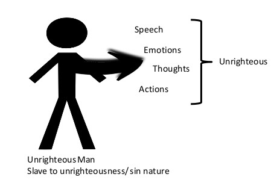
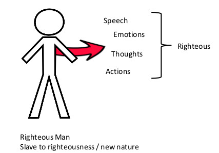

Building Kingdom Families: Experiencing Righteousness & Grace Within An Unrighteous Environment.
Listen to the sermon:
The Bigger Picture – The Purpose of Sunday mornings teaching.
Therefore, if anyone is in Christ, the new creation has come: The old has gone, the new is here! All this is from God, who reconciled us to himself through Christ and gave us the ministry of reconciliation that God was reconciling the world to himself in Christ, not counting people's sins against them. And he has committed to us the message of reconciliation. We are therefore Christ's ambassadors, as though God were making his appeal through us. We implore you on Christ's behalf: Be reconciled to God. God made him who had no sin to be sin offering for us, so that in him we might become the righteousness of God. 2 Cor 5:17-21 (NIV)
God commissions us the Church
- didomi:
- gives – to give
- to give something to someone.
- to give over to someone's care.
- tithemi:
- committed – to put
- is used of appointment to any form of service.
- diakonua:
- service ministry.
- logos:
- a word or saying.
Reconciliation
- The word reconciliation means to renew a friendship or to restore to a right relationship.
- Oneness
The old has gone, the new is here – the old relationship has gone and the new relationship is here.
The way the old sinful nature operated within me is gone and the way the new nature operates has arrived.
The old way of thinking has gone and the new way of thinking is here.
Jesus has introduced us to the Righteous and Gracious God.
Therefore, since we have been justified through faith, we have peace with God through our Lord Jesus Christ, through whom we have gained access by faith into this grace in which we now stand. Rom 5:1-2 (NIV)
Standing Firm in God's Grace.
It is for freedom that Christ has set us free. Stand firm, then, and do not let yourselves be burdened again by a yoke of slavery. Mark my words! I, Paul, tell you that if you let yourselves be circumcised, Christ will be of no value to you at all. Again I declare to every man who lets himself be circumcised that he is obligated to obey the whole law. You who are trying to be justified by the law have been alienated from Christ; you have fallen away from grace. For through the Spirit we eagerly await by faith the righteousness for which we hope. For in Christ Jesus neither circumcision nor uncircumcision has any value. The only thing that counts is faith expressing itself through love. Gal 5:1-6 (NIV)
For if, by the trespass of the one man, death reigned through that one man, how much more will those who receive God's abundant provision of grace and of the gift of righteousness reign in life through the one man, Jesus Christ! Rom 5:17 (NIV)
The law was brought in so that the trespass might increase. But where sin increased, grace increased all the more, so that, just as sin reigned in death, so also grace might reign through righteousness to bring eternal life through Jesus Christ our Lord. Rom 5:20-21 (NIV)
The difference between the defeated marriage and the victorious marriage, when they both have the same thorn, is that the victorious marriage is experiencing grace while the other is trying to fix things on their own. One marriage is resting under the spiritual cover of grace while the other is battling things out in the physical realm. Dr Tony Evans
The Righteous Living in the Reality of Unrighteousness.
Jesus is our example
He the Righteous One lived among the unrighteous.
As it is written: "There is no one righteous, not even one; there is no one who understands; there is no one who seeks God. All have turned away, they have together become worthless; there is no one who does good, not even one." Rom 3:10-12 (NIV)
Jesus answered: "Don't you know me, Philip, even after I have been among you such a long time? Anyone who has seen me has seen the Father. How can you say, 'Show us the Father'? Don't you believe that I am in the Father, and that the Father is in me? The words I say to you I do not speak on my own authority. Rather, it is the Father, living in me, who is doing his work. Believe me when I say that I am in the Father and the Father is in me; or at least believe on the evidence of the works themselves". John 14:9-11 NIV
"Remain in me, as I also remain in you. No branch can bear fruit by itself; it must remain in the vine. Neither can you bear fruit unless you remain in me". John 15:4 NIV
"... that all of them may be one, Father, just as you are in me and I am in you. May they also be in us so that the world may believe that you have sent me". John 17:21 NIV
Understand our new nature and get into agreement.
Romans 6: 1-12 What shall we say, then? Shall we go on sinning so that grace may increase? By no means! We are those who have died to sin; how can we live in it any longer? Or don't you know that all of us who were baptized into Christ Jesus were baptized into his death? We were therefore buried with him through baptism into death in order that, just as Christ was raised from the dead through the glory of the Father, we too may live a new life. For if we have been united with him in a death like his, we will certainly also be united with him in a resurrection like his. For we know that our old self was crucified with him so that the body ruled by sin might be done away with, (Or be rendered powerless) that we should no longer be slaves to sin— because anyone who has died has been set free from sin.
Now if we died with Christ, we believe that we will also live with him. For we know that since Christ was raised from the dead, he cannot die again; death no longer has mastery over him. The death he died, he died to sin once for all; but the life he lives, he lives to God. In the same way, count yourselves dead to sin but alive to God in Christ Jesus. Therefore do not let sin reign in your mortal body so that you obey its evil desires. Do not offer any part of yourself to sin as an instrument of wickedness, but rather offer yourselves to God as those who have been brought from death to life; and offer every part of yourself to him as an instrument of righteousness. For sin shall no longer be your master, because you are not under the law, but under grace.

"In the same way, count yourselves dead to sin but alive to God in Christ Jesus" Rom 6:11
"This is no game of let's pretend; believers should consider themselves to be what God in fact has made them. It is no vain exercise but one which is morally fruitful: the Spirit has come to make effective in them what Christ has done for them, and to enable them to become in daily experience, as far as may be in the present conditions of mortality, what they are already are 'in Christ Jesus' and what they will be fully in the resurrection life". FF Bruce
Love is developed within an unrighteous environment.
His divine power has given us everything we need for a godly life through our knowledge of him who called us by his own glory and goodness. Through these he has given us his very great and precious promises, so that through them you may participate in the divine nature, having escaped the corruption in the world caused by evil desires. For this very reason, make every effort to add to your faith goodness; and to goodness, knowledge; and to knowledge, self control; and to self-control, perseverance; and to perseverance, godliness; and to godliness, mutual affection; and to mutual affection, love. For if you possess these qualities in increasing measure, they will keep you from being ineffective and unproductive in your knowledge of our Lord Jesus Christ. 2 Peter 1:3-8 (NIV)
Scripture quotations marked (NIV) are taken from the Holy Bible, New International Version®, NIV®. Copyright © 1973, 1978, 1984, 2011 by Biblica, Inc.™ Used by permission of Zondervan. All rights reserved worldwide. www.zondervan.com The "NIV" and "New International Version" are trademarks registered in the United States Patent and Trademark Office by Biblica, Inc.™